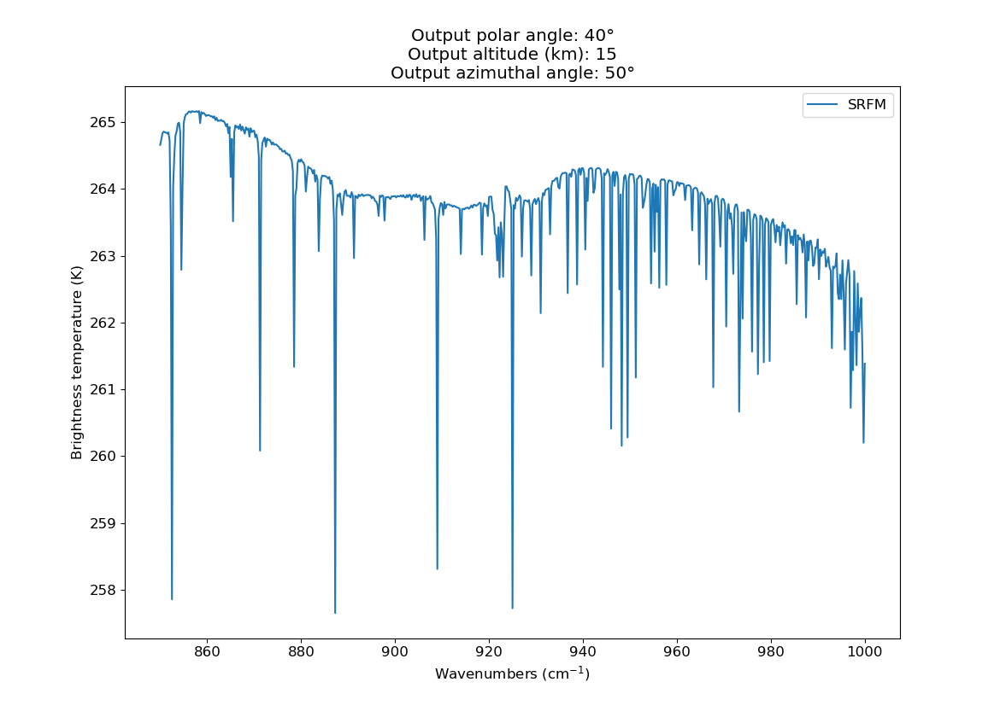

Note
Go to the end to download the full example code.
Run SRFM with a driver table
This example calculates brightness-temperature spectra for an atmosphere with sulphuric-acid aerosol, ash, and a water cloud. It demonstrates the traditional SRFM workflow in which a small runner loads a separate, editable driver table.
External spectroscopy data
SRFM does not distribute HITRAN line data or RFM cross sections. Download the
complete basic example bundle, extract
it, and set SRFM_HITRAN_FILE and SRFM_XSC_DIR as described in its
README.rst. No machine-specific paths are stored in this example.
The driver table
The complete configuration is kept in a normal Python file so it is easy to adapt. In particular, review the spectral grids, atmosphere, gases, scattering layers, and output geometry before running a scientific calculation.
import os
from pathlib import Path
from srfm import rfm_helper
EXAMPLE_DIR = Path(__file__).resolve().parent
HITRAN_FILE = Path("INPUT_PATH_TO_HITRAN_HERE").expanduser()
XSC_DIR = Path("INPUT_PATH_TO_XSC_DIRECTORY_HERE").expanduser()
# Final output grid, in cm-1
FIN_WVNMLO = 850.0 # min
FIN_WVNMHI = 1000.0 # max
FIN_RES = 0.25 # resolution
# Computational grid
SPC_RES = 0.1 # resolution
SPC_WVNMLO = FIN_WVNMLO - 2.0 # min
SPC_WVNMHI = FIN_WVNMHI + 2.0 # max
SPC_UNITS = "cm-1" # units (cm-1, nm, um)
# Compact in-memory fields may use a coarser grid than the main calculation.
# SRFM validates complete coverage and interpolates linearly in wavenumber.
BOUNDARY_WAVENUMBER = [SPC_WVNMLO, (SPC_WVNMLO + SPC_WVNMHI) / 2, SPC_WVNMHI]
inputs = {
## General
# Every optional input consumed by main.run_srfm is shown explicitly in
# this example. Optional fields may be removed to use their documented
# defaults or the corresponding automatically derived value.
"date": (2019, 7, 1), # optional: UTC date used for Sun-Earth distance
"base_plots": True, # plot output spectrum
"out_mode": "netcdf", # file format to save output to, netcdf, txt or None
"out_fname": None, # optional: NetCDF filename; None uses "srfm.nc"
"show_plots": False, # show plots on screen
"results_fldr": str(EXAMPLE_DIR / "results"), # where to save results
# Retained values are saved to srfm.nc; retained bbt/rad are also plotted.
"retain_outputs": ("bbt",),
"scattering_block_size": 10000, # optional: interpolation block size
"retain_phase_functions": False, # optional: retain large phase arrays
# instrument line shape (ILS)
"convolve_iasi": False, # if True, convolves spectrum with IASI ILS below
"iasi_ils": str(EXAMPLE_DIR / "iasi.ils"), # optional path to ILS
# file
## Grids
"fin_wvnmlo": FIN_WVNMLO,
"fin_wvnmhi": FIN_WVNMHI,
"fin_res": FIN_RES,
"spc_res": SPC_RES,
"spc_wvnmlo": SPC_WVNMLO,
"spc_wvnmhi": SPC_WVNMHI,
"spc_units": SPC_UNITS,
## Output geometry
"out_fmt": "altitude", # "altitude" (km) or "tau" (optical depth)
"out": [15, 20], # output altitudes; a number or one-dimensional sequence
"out_toa": True, # also return output at the top of the atmosphere
## RFM configuration:
# RFM global config
"rfm_config": {
"output_mode": "capture", # "capture" or "files"
"driver_path": None, # e.g. Path("drvs/example.drv")
"generate_driver": False, # Set True to overwrite driver_path contents
"verbose": False,
"capture_files_content": False, # True - store output files content in result
# the logic is to save memory if processed outputs, such as dataframes are requested
# and not capture the raw files as well.
},
# inputs that mirror the standard RFM driver table https://eodg.atm.ox.ac.uk/RFM/index.html
"driver_inputs": dict(
# mandatory sections
header="SRFM_standard_run",
flags=("OPT", "NAD", "SFC", "PRF", "LEV", "DBL", "CHI", "MIX"),
spectral=[rfm_helper.SpectralRange(SPC_WVNMLO, SPC_WVNMHI, SPC_RES)],
gases=(
"N2",
"O2",
"CO2",
"O3",
"H2O",
"CH4",
"N2O",
"HNO3",
"CO",
"NO2",
"N2O5",
"ClO",
"HOCl",
"ClONO2",
"NO",
"HNO4",
"HCN",
"NH3",
"F11",
"F12",
"F14",
"F22",
"CCl4",
"COF2",
"H2O2",
"C2H2",
"C2H6",
"OCS",
"SO2",
),
atmosphere=(
str(EXAMPLE_DIR / "hgt_std.atm"),
str(EXAMPLE_DIR / "day.atm"),
# Keep the actual profile as the second item in this tuple.
# TODO change the reliance on positions
),
hit=(str(HITRAN_FILE),),
xsc=(str(XSC_DIR / "*.xsc"),),
),
# Optional internal calculation levels (km); omit to use the standard grid.
"levels": [
0.0, 1.0, 2.0, 3.0, 4.0, 5.0, 6.0, 7.0, 8.0, 9.0,
10.0, 11.0, 12.0, 13.0, 14.0, 15.0, 16.0, 17.0, 18.0,
19.0, 20.0, 21.0, 22.0, 23.0, 24.0, 25.0, 27.5, 30.0,
32.5, 35.0, 37.5, 40.0, 42.5, 45.0, 47.5, 50.0, 55.0,
60.0, 65.0, 70.0, 75.0, 80.0, 85.0, 90.0, 95.0, 100.0,
105.0, 110.0, 115.0, 120.0,
],
## DISORT configuration
"fisot": 0.0, # isotropic illumination at the top of the atmosphere
"albedo": {
"grid": BOUNDARY_WAVENUMBER,
"values": [0.08, 0.12, 0.18],
"grid_units": "cm-1",
}, # spectral Lambertian bottom-boundary albedo; a scalar remains supported
"temis": 1.0, # top boundary emissivity
"earth_radius": 6371.0, # optional: Earth radius (km); defaults to 6371
"nmom": 17, # requested phase moments; SRFM raises this when required
"maxcmu": 16, # computational streams; even and at least 4
"maxumu": 1, # number of user output polar angles
"maxphi": 1, # number of user azimuth angles
"usrang": True, # return output at user angles?
"usrtau": True, # return output at user optical depths?
"ibcnd": 0, # boundary conditions
"onlyfl": False, # return only fluxes?
"prnt": [False, False, False, False, False], # what gets prints to terminal
"planck": True, # include internal Planck function?
"lamber": True, # Lambertian reflector surface
"deltamplus": True, # Delta-M+ approximation to phase functions
"do_pseudo_sphere": False, # spherical correction
"disort_precision": "double", # Fortran precision
"header": "NO HEADER", # optional: DISORT terminal header
"adjust_maxcmu": False, # if DISORT output intensity is negative, rerun with more streams
"btemp": 300.0, # optional: lower-boundary temperature (K)
"ttemp": 295.0, # optional: upper-boundary temperature (K)
## Layer (scattering, grey body, etc.) configuration
# Layers are named by the keys in these dictionaries; refer to the docs for
# layer-specific parameters. Both mappings are optional.
"scat_lyrs_inputs": {
"Sulphuric_acid_1": {
"name": "Sulphuric_acid_1",
"low_spc": SPC_WVNMLO,
"upp_spc": SPC_WVNMHI,
"res": 3.0,
"spec_units": SPC_UNITS,
"rho": 1670.0, # scatterer density
"n": None, # number concentration
"s": 1.75, # size distribution spread
"s_a_den": None, # surface area density
"v_den": None, # volume density
"dist_type": "log_normal", # size distribution type
"comp": "sulphuric acid", # refractive index
"center_alt": 14.0, # scattering layer center altitude
"thick": 1.5, # scattering layer thickness
"radii": 181, # number of particle radii in particle size distribution
"eta": 1e-6, # size distribution cut-off
"phase_quad_N": 200, # number of quadrature points in the phase function
"phase_quad_type": "L", # phase function quadrature type
"radii_quad_type": "T", # size distribution quadrature type
"leg_coeffs": True, # return Legendre expansion coefficients
"leg_coeffs_type": "normalised", # what type of coefficients
"multiprocess": False, # attempt to parallelize calculations, EXPERIMENTAL
"mass_loading": 0.2, # scatterer mass loading (g m-2)
"r": 0.4, # particle mean radius
},
"Ash_1": {
"name": "Ash_1",
"low_spc": SPC_WVNMLO,
"upp_spc": SPC_WVNMHI,
"res": 1.0,
"spec_units": SPC_UNITS,
"rho": 2300.0,
"n": None,
"s": 1.8,
"s_a_den": None,
"v_den": None,
"dist_type": "log_normal",
"comp": "ash",
"center_alt": 9.0,
"thick": 1.0,
"radii": 181,
"eta": 1e-6,
"phase_quad_N": 200,
"phase_quad_type": "L",
"radii_quad_type": "T",
"leg_coeffs": True,
"leg_coeffs_type": "normalised",
"multiprocess": False,
"mass_loading": 0.21,
"r": 0.1,
},
"Water_cloud_1": {
"name": "Water_cloud_1",
"low_spc": SPC_WVNMLO,
"upp_spc": SPC_WVNMHI,
"res": 1.0,
"spec_units": SPC_UNITS,
"rho": 997.0,
"n": None,
"s": 1.5,
"s_a_den": None,
"v_den": None,
"dist_type": "log_normal",
"comp": "H2O_263K_Rowe_2020.ri",
"center_alt": 3,
"thick": 1,
"radii": 181,
"eta": 1e-6,
"phase_quad_N": 200,
"phase_quad_type": "L",
"radii_quad_type": "T",
"leg_coeffs": True,
"leg_coeffs_type": "normalised",
"multiprocess": False,
"mass_loading": 100.0,
"r": 15.0,
},
},
"gbc_lyrs_inputs": {
"GBC_1": {
"name": "GBC_1", # GreyBodyCloud layer name
"low_spc": SPC_WVNMLO, # spectral calculation grid lower limit
"upp_spc": SPC_WVNMHI, # spectral calculation grid upper limit
"res": 1.0, # spectral calculation grid resolution
"spec_units": SPC_UNITS, # spectral calculation grid units
"center_alt": 5.0, # layer center altitude (km)
"thick": 0.01, # layer thickness (km)
"emis": 1.0, # grey-body emissivity; currently a stub
"inp_tau": 1e4, # cloud optical depth
},
},
# Prescribed particle optics participate in the same non-overlapping vertical
# structure as Mie and grey-body layers. This layer spans 6.0--6.4 km.
"prescribed_lyrs_inputs": {
"prescribed_aerosol": {
"name": "prescribed_aerosol",
"alt_low": 6.0,
"alt_upp": 6.4,
"optical_depth": {
"type": "angstrom",
"reference_value": 0.00058,
"reference_wavelength_um": 1.0,
"angstrom_exponent": 1.48,
},
"ssalb": 0.822,
"phase_function": {
"type": "henyey_greenstein",
"asymmetry": 0.490,
},
},
},
## solar reflection
"sun": True, # if True, include solar reflection
# Values are beam-normal DISORT FBEAM spectral irradiance. A custom spectrum
# receives unit conversion and interpolation only: no date, cosine, or amplitude
# scaling is applied.
"solar_spectrum": {
"grid": BOUNDARY_WAVENUMBER,
"values": [0.75, 0.95, 1.10],
"grid_units": "cm-1",
"value_units": "W m-2 (cm-1)-1",
},
# With sun=True, sza is in [0, 90); set sun=False for a night-side scene.
"sza": 0, # solar zenith angle; 0 is directly overhead
"saa": 0, # solar azimuth angle, 0-360
## Angles
"zen": 40, # satellite zenith angle, 0-180 (not 90 for angular output)
"azi": 50, # satellite azimuth angle, 0-360
}
Example output
The figure below is a precomputed result from this configuration. The hosted documentation does not rerun the model because its external spectroscopy data is not available on Read the Docs.
{kind=link}

import os
from pathlib import Path
from srfm import inputs, main
# Use the script location rather than the caller's working directory so that
# the downloaded example can be run from anywhere.
EXAMPLE_DIR = Path(__file__).resolve().parent
srfm_inputs = inputs.Inputs()
srfm_inputs.read_srfm_drv(EXAMPLE_DIR / "driver_table.py")
result = main.run_srfm(srfm_inputs)
# Use ``result`` for further analysis in the same Python process. Files and
# plots requested by the driver table are written beneath ``results/``.